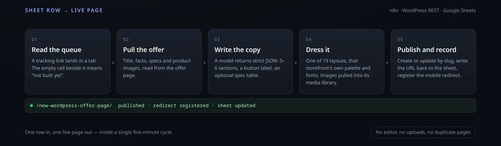

Case study · Publishing automation
One spreadsheet row in. One live landing page out.
A publisher drops an offer's tracking link into a shared sheet. Nobody opens WordPress. Within one poll cycle the page is live on the right storefront: that site's colours and type, the offer's product images pulled into its own media library, copy limited to what the offer page actually states, and the mobile redirect registered.
- One row = one page
- Five storefronts
- 19 layouts
- Images pulled in, not hotlinked
- Re-runs update, never duplicate

What it replaced
01 / 05Every offer used to mean a hand-built page: open the tracking link, read the offer, write the copy, assemble the blocks, upload the product shots, publish, then add the mobile redirect by hand. Twenty-five offers went through the new pipeline before I called it done.
- Same page, every storefrontEach storefront has its own palette, fonts and layout set. A page built for one never looks pasted into another.
- The offer decides the copyThe model works from the offer page and returns a fixed JSON shape. If a price, a shipping cost or a guarantee is not in the source, it is not on the page.
- The sheet is the stateNo database, no dashboard. A filled cell means done; an empty one means build it. The publisher can see the queue at a glance and add rows from a phone.
- Nothing to hand overThe run books itself: page URL written back, redirect entry merged, and a re-run of the same row updates that page instead of creating a second one.
The parts that were actually hard
02 / 05Four problems took most of the build. None of them were the model.
The offer's images refuse to load
Most offer pages sit behind a bot filter that answers 403 to anything from a data-centre address: the raw fetch, a real Chrome, and an anti-detect browser all got the same refusal. A screenshot was never an option either, for the same reason. So the page is not asked to fetch the image at all. WordPress pulls it through its own hosting address, which the filter allows, and stores it as a normal media item — reusing the existing attachment when the same filename has been imported before, so repeated runs do not fill the library with copies.
Layout slots versus what the model returns
A model is happy to put an image in section one; a layout may only keep image slots in section three. The first build dropped every image silently because of that mismatch. The fix is unglamorous: collect every image the model returns into one ordered list, then fill the layout's slots in document order. When an offer brings five or more images, the run switches to a layout built for them — hero image, a three-across strip, and a closing banner.
Redirects, without losing a file
Each storefront keeps its page-to-offer map in a JSON file, and the filename differs per site. The merge reads the file, adds one key, and writes it back with the original two-space formatting and key order, so a one-line change stays a one-line change. It refuses to write at all if the JSON does not parse, swaps the file atomically, and keeps a backup — three ways a corrupted file would otherwise have wiped a hundred-plus mappings.
One bad offer must not stall the queue
Offers that are region-locked, dead, or unreadable get a note in their own sheet cell instead of blocking the rest. The poller works on a time-sliced rotation, so a failing row is retried on a later cycle while the others keep flowing.
What one page gets
03 / 05| Part | Rule the pipeline enforces |
|---|---|
| Copy | Only facts present in the offer page; 3–6 sections; a button label of five words or fewer |
| Spec table | Added only when the source states real specs, sizes or prices |
| Colour and type | That storefront's palette and font pair, taken from its own published pages |
| Button contrast | Label and fill kept at 4.5:1 or better, checked at build time |
| Images | Imported into the site's media library and referenced host-relative, never hotlinked |
| Re-runs | The slug already in the sheet is reused, so the page is updated rather than duplicated |
| Mobile | Visitors on a phone are forwarded to the offer; desktop visitors read the page |
Nineteen layouts across five storefronts, including a handful that carry no images at all for offers whose shots cannot be imported.
What it does not do
04 / 05- It does not invent offersIf the offer page cannot be read, no page is published. A blank cell in the sheet is better than a page making claims the advertiser never made.
- It does not chase approvalsPages go live in the same cycle. Nothing is held in draft for review — that was a deliberate choice for this publisher's workflow.
- It does not manage the offer itselfPrices, stock and deadlines belong to the advertiser. The page links out; it never restates a number it was not given.
- It does not replace designThe layouts were designed once, by hand, and the pipeline reuses them. It decides which one fits, not how it looks.
What stays private
05 / 05This page shows the design and the decisions, not the delivery.
- The sourceThe workflow, the layout files and the site-side endpoints are not published, because they run a live commercial pipeline.
- The clientThe stores are described here as A–D. Their names, offers and traffic are not mine to publish.
- CredentialsEvery key, token and per-site password lives in the deployment, never in this page.
- The numbersRow counts and layout counts above are what the system reports about itself. There are no invented revenue or traffic figures.